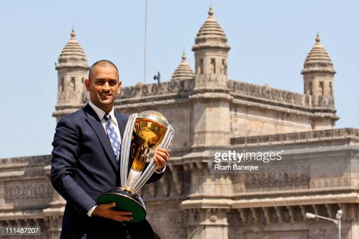

M.S DHONI

- 7 July 1981 (age 41) Ranchi, Bihar (present-day Jharkhand), India
- 2004 Odi debut vs bangaladesh
- 2005 Test deput vs australia
- 2006T20 deput vs SouthAfrica
- 2008Become Captain in india and Csk
- 2011 Cricket World Cup, and the 2013 ICC Champions Trophy, the most by any captain.
- Dhyanchand Khel Ratna Award in 2008 for his outstanding achievements and the Government of India
- India's fourth civilian award Padma Shri in 2009 third civilian award Padma Bhushan in 2018.
- He is the only cricket captain in the world to win all three of the Cricket World Cup, ICC Men's T20 World Cup and ICC Champions Trophy.